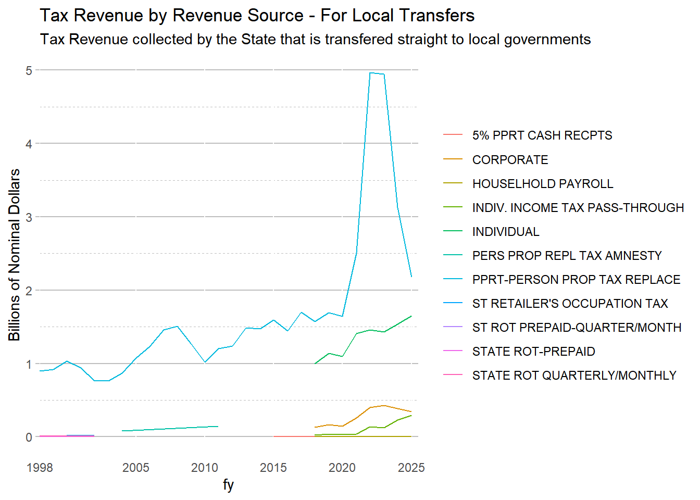

Separate transfers to local from parent agencies that come from DOR(492) or Transportation (494). Treats muni revenue transfers as expenditures, not negative revenue.
The share of certain taxes levied state-wide at a common rate and then transferred to local governments. (Purely local-option taxes levied by specific local governments with the state acting as collection agent are NOT included.)
The six corresponding revenue items are:
Local share of Personal Income Tax
Individual Income Tax Pass-Through New 2021 (source 2582).
Local share of General Sales Tax
Personal Property Replacement Tax on Business Income
Personal Property Replacement Tax on Public Utilities
Local share of Motor Fuel Tax
Transportation Renewal Fund 0952
Until Dec 18. 2022, Local CURE was being aggregated into Revenue totals since the agency was the Department of Revenue. However the $371 million expenditure is for “LOC GOVT ARPA” and the revenue source that is Local CURE is also $371 million. Since it cancels out and is just passed through the state government, I am changing changing the fund_ab_in file so that in_ff=0 for the Local CURE fund. It also inflates the department of revenue expenditures in a misleading way when the expense is actually a transfer to local governments.
Dropping Local CURE fund from analysis results in a $371 million decrease in the department of Revenue (where the Local Government ARPA transfer money). The appropriation for it was over $740 million so some will probably be rolled over to FY23 too.
In the FY21 New and Reused Funds word document, 0325 Local CURE is described as “Created as a federal trust fund. The fund is established to receive transfers from either the disaster response and recovery fund or the state cure fund of federal funds received by the state. These transfers, subject to appropriation, will provide for the administration and payment of grants and expense reimbursements to units of local government. Revenues should be under Federal Other and expenditures under Commerce and Economic Opportunity.” - Changed to Exclude.
exp_temp <- exp_temp %>%mutate(agency =case_when( fund=="0515"& object=="4470"& type=="08"~"971", # income tax to local governments fund=="0515"& object=="4491"& type=="08"& sequence=="00"~"971", # object is shared revenue payments fund=="0802"& object=="4491"~"972", #pprt transfer fund=="0515"& object=="4491"& type=="08"& sequence=="01"~"976", #gst to local fund=="0627"& object=="4472"~"976" , # public transportation fund but no observations exist fund=="0648"& object=="4472"~"976", # downstate public transportation, but doesn't exist fund=="0515"& object=="4470"& type=="00"~"976", # object 4470 is grants to local governments object=="4491"& (fund=="0188"|fund=="0189") ~"976", fund=="0187"& object=="4470"~"976", fund=="0186"& object=="4470"~"976", object=="4491"& (fund=="0413"|fund=="0414"|fund=="0415") ~"975", #mft to local fund =="0952"~"975", # Added Sept 29 2022 AWM. Transportation Renewal MFTTRUE~as.character(agency)),agency_name =case_when( agency =="971"~"INCOME TAX 1/10 TO LOCAL", agency =="972"~"PPRT TRANSFER TO LOCAL", agency =="975"~"MFT TO LOCAL", agency =="976"~"GST TO LOCAL",TRUE~as.character(agency_name))) %>%mutate(group =ifelse(agency>"970"& agency <"977", as.character(agency), ""))transfers_long <- exp_temp %>%filter(group =="971"|group =="972"| group =="975"| group =="976")
transfers_long %>%group_by(agency_name, group, fy) %>%summarize(expenditure =sum(expenditure, na.rm=TRUE) )%>%ggplot() +geom_line(aes(x=fy, y = expenditure, color=agency_name)) +scale_x_continuous(expand =c(0,0), limits =c(1998, current_year+.5), breaks =c(1998, 2005, 2010, 2015, 2020, current_year)) +labs(title ="Transfers to Local Governments", caption ="Data Source: Illinois Office of the Comptroller")
Large increases in local transfers were driven by large increases in overall tax revenue collected by the state.
Local share of Personal Income Tax (at the 3.0% rate)
Local share of General Sales Tax (1.25% rate) (20% of 6.25% sales tax on general merchandise and 100% of 1% sales tax on food/drugs/medical appliances)
Personal Property Replacement Tax on Business Income (2.5% replacement tax on net Illinois income for corporations; 1.5% for partnerships, trusts, and S corporations)
Personal Property Replacement Tax on Public Utilities (0.8% tax on invested capital)
Local share of Motor Fuel Tax & Transportation Renewal Fund 0952 (State collects 19cents/gallon and distributes it). Rebuild Illinois allows $0.03 per gallon.
4.1 By Revenue Type
Code
rev_temp %>%filter(rev_type =="03"| rev_type =="02") %>%group_by(fy, source, source_name_AWM) %>%summarize(receipts =sum(receipts)) %>%ggplot() +# aes(x=fy, y=receipts/1000, group = source))+# geom_recessions(text = FALSE)+geom_line(aes(x=fy, y=receipts/1000000000, color = source_name_AWM)) +#geom_text(data = annotation, aes(x=x, y=y, label=label)) +theme_classic() +scale_x_continuous(expand =c(0,0), limits =c(1998, current_year+.5), breaks =c(1998, 2005, 2010, 2015, 2020, current_year)) +scale_y_continuous(labels = comma) +# scale_linetype_manual(values = c("dotted", "dashed", "solid")) +# theme(legend.position = "none") +labs(title ="All Income Tax by Revenue Source", subtitle ="Income Taxes include money transfered straight to local governments and funds saved for tax refunds.",y ="Billions of Nominal Dollars")
Code
rev_temp %>%filter(rev_type =="03"| rev_type =="02"| rev_type =="06") %>%filter(str_detect(source_name_AWM, "PPRT") |str_detect(fund_name_ab, "REPLACE") |str_detect(fund_name_ab, "DISTRIBU") ) %>%group_by(fy, source, source_name_AWM) %>%summarize(receipts =sum(receipts)) %>%ggplot() +geom_line(aes(x=fy, y=receipts/1000000000, color = source_name_AWM)) +#geom_text(data = annotation, aes(x=x, y=y, label=label)) +theme_classic() +scale_x_continuous(expand =c(0,0), limits =c(1998, current_year+.5), breaks =c(1998, 2005, 2010, 2015, 2020, current_year)) +scale_y_continuous(labels = comma) +labs(title ="Tax Revenue by Revenue Source - For Local Transfers", subtitle ="Tax Revenue collected by the State that is transfered straight to local governments",y ="Billions of Nominal Dollars")

Code
rev_temp %>%filter(rev_type =="03"| rev_type =="02"| rev_type =="06") %>%filter(str_detect(source_name_AWM, "PPRT") |str_detect(fund_name_ab, "REFUND") ) %>%group_by(fy, source, source_name_AWM) %>%summarize(receipts =sum(receipts)) %>%ggplot() +geom_line(aes(x=fy, y=receipts/1000000000, color = source_name_AWM)) +theme_classic() +scale_x_continuous(expand =c(0,0), limits =c(1998, current_year+.5), breaks =c(1998, 2005, 2010, 2015, 2020, current_year)) +scale_y_continuous(labels = comma) +labs(title ="Tax Revenue Collected by State for Local Transfers", subtitle ="Source contains PPRT or Refund in name",y ="Billions of Nominal Dollars")
Code
rev_temp %>%filter(#rev_type == "03" | # rev_type == "02" | rev_type =="06") %>%filter(!str_detect(source_name_AWM, "PPRT") &!str_detect(fund_name_ab, "REFUND")) %>%group_by(fy, source, source_name_AWM) %>%summarize(receipts =sum(receipts)) %>%ggplot() +# aes(x=fy, y=receipts/1000, group = source))+geom_recessions(text =FALSE)+geom_line(aes(x=fy, y=receipts/1000000000, color = source_name_AWM)) +#geom_text(data = annotation, aes(x=x, y=y, label=label)) +theme_classic() +scale_x_continuous(expand =c(0,0), limits =c(1998, current_year+.5), breaks =c(1998, 2005, 2010, 2015, 2020, current_year)) +scale_y_continuous(labels = comma) +scale_linetype_manual(values =c("dotted", "dashed", "solid")) +theme(legend.position ="none") +labs(title ="What the State Actually Gets to Keep", subtitle ="Tax Revenue collected by the State - (refund fund $ & Local Transfers)",y ="Billions of Nominal Dollars")
Source Code
# Local TransfersSeparate transfers to local from parent agencies that come from DOR(492) or Transportation (494). Treats muni revenue transfers as expenditures, not negative revenue.The share of certain taxes levied state-wide at a common rate and then transferred to local governments. (Purely local-option taxes levied by specific local governments with the state acting as collection agent are NOT included.)The six corresponding revenue items are:- Local share of Personal Income Tax - Individual Income Tax Pass-Through New 2021 (source 2582).- Local share of General Sales Tax- Personal Property Replacement Tax on Business Income- Personal Property Replacement Tax on Public Utilities- Local share of Motor Fuel Tax- Transportation Renewal Fund 0952Until Dec 18. 2022, Local CURE was being aggregated into Revenue totals since the agency was the Department of Revenue. However the \$371 million expenditure is for "LOC GOVT ARPA" and the revenue source that is Local CURE is also \$371 million. Since it cancels out and is just passed through the state government, I am changing changing the fund_ab_in file so that in_ff=0 for the Local CURE fund. It also inflates the department of revenue expenditures in a misleading way when the expense is actually a transfer to local governments.- Dropping Local CURE fund from analysis results in a \$371 million decrease in the department of Revenue (where the Local Government ARPA transfer money). The appropriation for it was over \$740 million so some will probably be rolled over to FY23 too.- In the FY21 New and Reused Funds word document, 0325 Local CURE is described as *"Created as a federal trust fund. The fund is established to receive transfers from either the disaster response and recovery fund or the state cure fund of federal funds received by the state. These transfers, subject to appropriation, will provide for the administration and payment of grants and expense reimbursements to units of local government. Revenues should be under Federal Other and expenditures under Commerce and Economic Opportunity."* - Changed to Exclude.```{r warning = FALSE, message=FALSE}library(tidyverse)library(haven)library(formatR)library(lubridate)library(smooth)library(forecast)library(scales)library(kableExtra)library(ggplot2)library(readxl)library(tidyverse)library(data.table)library(quantmod)library(geofacet)library(janitor)theme_set(theme_classic())knitr::opts_chunk$set(warning = FALSE, message = FALSE)current_year = 2024exp_temp <- read_csv("./data/exp_temp.csv")rev_temp <- read_csv("./data/rev_temp.csv")``````{r include=FALSE}library(cmapplot)update_recessions <- function(url = NULL, quietly = FALSE){ # Use default URL if user does not override if (is_null(url) | missing(url)) { url <- "https://data.nber.org/data/cycles/business_cycle_dates.json" } # locally bind variable names start_char <- end_char <- start_date <- end_date <- ongoing <- index <- peak <- trough <- NULL return( # attempt to download and format recessions table tryCatch({ recessions <- jsonlite::fromJSON(url) %>% # drop first row trough dplyr::slice(-1) %>% # convert peaks and troughs... dplyr::mutate( # ...to R dates start_date = as.Date(peak), end_date = as.Date(trough), # ... and clean char strings start_char = format(start_date, "%b %Y"), end_char = format(end_date, "%b %Y")) %>% # confirm ascending and create row number dplyr::arrange(start_date) %>% mutate(index = row_number()) %>% mutate( # Flag unfinished recessions ongoing = case_when( is.na(end_date) & index == max(.$index) ~ T, TRUE ~ F), # set ongoing recession to arbitrary future date end_date = case_when( ongoing ~ as.Date("2200-01-01"), TRUE ~ end_date), # mark ongoing recession in char field end_char = case_when( ongoing ~ "Ongoing", TRUE ~ end_char) ) %>% # clean up select(start_char, end_char, start_date, end_date, ongoing) if (!quietly) {message("Successfully fetched from NBER")} # Return recessions recessions }, error = function(cond){ if (!quietly) message("WARNING: Fetch or processing failed. `NULL` returned.") return(NULL) } ) )}#recess_table <- list(build_recessions(update))recessions <- update_recessions()``````{r}exp_temp <- exp_temp %>%mutate(agency =case_when( fund=="0515"& object=="4470"& type=="08"~"971", # income tax to local governments fund=="0515"& object=="4491"& type=="08"& sequence=="00"~"971", # object is shared revenue payments fund=="0802"& object=="4491"~"972", #pprt transfer fund=="0515"& object=="4491"& type=="08"& sequence=="01"~"976", #gst to local fund=="0627"& object=="4472"~"976" , # public transportation fund but no observations exist fund=="0648"& object=="4472"~"976", # downstate public transportation, but doesn't exist fund=="0515"& object=="4470"& type=="00"~"976", # object 4470 is grants to local governments object=="4491"& (fund=="0188"|fund=="0189") ~"976", fund=="0187"& object=="4470"~"976", fund=="0186"& object=="4470"~"976", object=="4491"& (fund=="0413"|fund=="0414"|fund=="0415") ~"975", #mft to local fund =="0952"~"975", # Added Sept 29 2022 AWM. Transportation Renewal MFTTRUE~as.character(agency)),agency_name =case_when( agency =="971"~"INCOME TAX 1/10 TO LOCAL", agency =="972"~"PPRT TRANSFER TO LOCAL", agency =="975"~"MFT TO LOCAL", agency =="976"~"GST TO LOCAL",TRUE~as.character(agency_name))) %>%mutate(group =ifelse(agency>"970"& agency <"977", as.character(agency), ""))transfers_long <- exp_temp %>%filter(group =="971"|group =="972"| group =="975"| group =="976")``````{r graph-local-transfers}transfers_long %>% group_by(fy, group ) %>% summarize(sum_expenditure = sum(expenditure)/1000000) %>% pivot_wider(names_from = "group", values_from = "sum_expenditure", names_prefix = "exp_" )transfers_long %>% group_by(agency_name, group, fy) %>% summarize(expenditure = sum(expenditure, na.rm=TRUE) )%>% ggplot() + geom_line(aes(x=fy, y = expenditure, color=agency_name)) + scale_x_continuous(expand = c(0,0), limits = c(1998, current_year+.5), breaks = c(1998, 2005, 2010, 2015, 2020, current_year)) + labs(title = "Transfers to Local Governments", caption = "Data Source: Illinois Office of the Comptroller")```Large increases in local transfers were driven by large increases in overall tax revenue collected by the state.2. Local share of Personal Income Tax (at the 3.0% rate)<!-- -->6. Local share of General Sales Tax (1.25% rate) [(20% of 6.25% sales tax on general merchandise and 100% of 1% sales tax on food/drugs/medical appliances)]{.underline}<!-- -->3. Personal Property Replacement Tax on Business Income [(2.5% replacement tax on net Illinois income for corporations; 1.5% for partnerships, trusts, and S corporations)]{.underline}<!-- -->12. Personal Property Replacement Tax on Public Utilities [(0.8% tax on invested capital)]{.underline}<!-- -->9. Local share of Motor Fuel Tax [& Transportation Renewal Fund 0952 (State collects 19cents/gallon and distributes it). Rebuild Illinois allows \$0.03 per gallon.]{.underline}## By Revenue Type```{r}rev_temp %>%filter(rev_type =="03"| rev_type =="02") %>%group_by(fy, source, source_name_AWM) %>%summarize(receipts =sum(receipts)) %>%ggplot() +# aes(x=fy, y=receipts/1000, group = source))+# geom_recessions(text = FALSE)+geom_line(aes(x=fy, y=receipts/1000000000, color = source_name_AWM)) +#geom_text(data = annotation, aes(x=x, y=y, label=label)) +theme_classic() +scale_x_continuous(expand =c(0,0), limits =c(1998, current_year+.5), breaks =c(1998, 2005, 2010, 2015, 2020, current_year)) +scale_y_continuous(labels = comma) +# scale_linetype_manual(values = c("dotted", "dashed", "solid")) +# theme(legend.position = "none") +labs(title ="All Income Tax by Revenue Source", subtitle ="Income Taxes include money transfered straight to local governments and funds saved for tax refunds.",y ="Billions of Nominal Dollars") ``````{r}rev_temp %>%filter(rev_type =="03"| rev_type =="02"| rev_type =="06") %>%filter(str_detect(source_name_AWM, "PPRT") |str_detect(fund_name_ab, "REPLACE") |str_detect(fund_name_ab, "DISTRIBU") ) %>%group_by(fy, source, source_name_AWM) %>%summarize(receipts =sum(receipts)) %>%ggplot() +geom_line(aes(x=fy, y=receipts/1000000000, color = source_name_AWM)) +#geom_text(data = annotation, aes(x=x, y=y, label=label)) +theme_classic() +scale_x_continuous(expand =c(0,0), limits =c(1998, current_year+.5), breaks =c(1998, 2005, 2010, 2015, 2020, current_year)) +scale_y_continuous(labels = comma) +labs(title ="Tax Revenue by Revenue Source - For Local Transfers", subtitle ="Tax Revenue collected by the State that is transfered straight to local governments",y ="Billions of Nominal Dollars") rev_temp %>%filter(rev_type =="03"| rev_type =="02"| rev_type =="06") %>%filter(str_detect(source_name_AWM, "PPRT") |str_detect(fund_name_ab, "REFUND") ) %>%group_by(fy, source, source_name_AWM) %>%summarize(receipts =sum(receipts)) %>%ggplot() +geom_line(aes(x=fy, y=receipts/1000000000, color = source_name_AWM)) +theme_classic() +scale_x_continuous(expand =c(0,0), limits =c(1998, current_year+.5), breaks =c(1998, 2005, 2010, 2015, 2020, current_year)) +scale_y_continuous(labels = comma) +labs(title ="Tax Revenue Collected by State for Local Transfers", subtitle ="Source contains PPRT or Refund in name",y ="Billions of Nominal Dollars") ``````{r}rev_temp %>%filter(#rev_type == "03" | # rev_type == "02" | rev_type =="06") %>%filter(!str_detect(source_name_AWM, "PPRT") &!str_detect(fund_name_ab, "REFUND")) %>%group_by(fy, source, source_name_AWM) %>%summarize(receipts =sum(receipts)) %>%ggplot() +# aes(x=fy, y=receipts/1000, group = source))+geom_recessions(text =FALSE)+geom_line(aes(x=fy, y=receipts/1000000000, color = source_name_AWM)) +#geom_text(data = annotation, aes(x=x, y=y, label=label)) +theme_classic() +scale_x_continuous(expand =c(0,0), limits =c(1998, current_year+.5), breaks =c(1998, 2005, 2010, 2015, 2020, current_year)) +scale_y_continuous(labels = comma) +scale_linetype_manual(values =c("dotted", "dashed", "solid")) +theme(legend.position ="none") +labs(title ="What the State Actually Gets to Keep", subtitle ="Tax Revenue collected by the State - (refund fund $ & Local Transfers)",y ="Billions of Nominal Dollars") ```